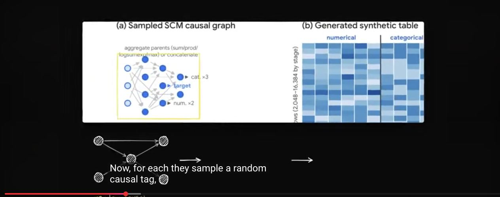
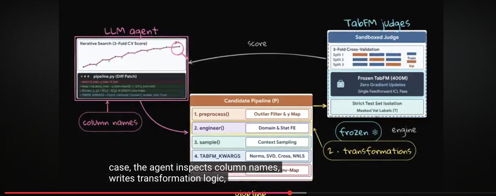
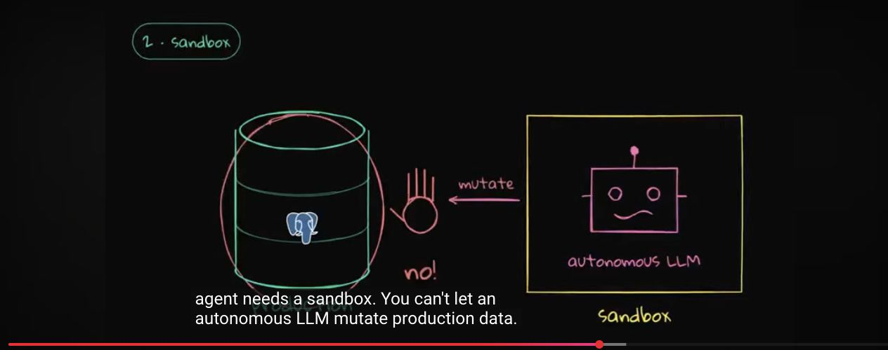
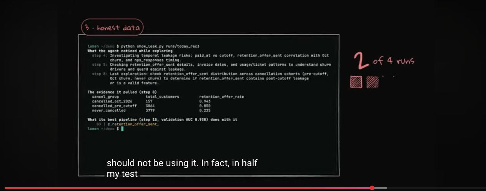

Executive summary
The real shift is from fitting a model to composing an inference context
The video presents TabFM as a “GPT-3 moment” for business tables. That analogy is useful if read narrowly. A conventional tabular workflow often fits and tunes a fresh model for every dataset. TabFM is a pretrained 400-million-parameter Transformer that instead reads labeled rows as context and predicts targets for query rows without updating its weights. Classification and regression become an in-context inference problem.
That does not erase the rest of data science. A production prediction still needs a valid target, a time-correct training view, semantic feature interpretation, calibration, monitoring, and a deployment path. The video's strongest contribution is therefore architectural: pair a frozen tabular foundation model with an LLM agent that understands schema semantics, then give the agent a controlled database workspace where every experiment is isolated and reproducible.
- TabFM replaces per-dataset weight training with in-context learning. Labeled rows are the context; unlabeled rows are the query.
- Synthetic causal pretraining teaches a learning procedure rather than one business domain. The model is trained on randomized structural causal models, table shapes, missingness, noise, and class balance.
- Semantics remain a gap. Column names, descriptions, units, and auxiliary files contain domain meaning that numerical cell encoding alone cannot recover.
- TabFM-Auto gives the LLM the right job. The agent edits cleaning, feature engineering, context selection, and post-processing around frozen TabFM rather than pretending prose generation is the predictor.
- Temporal correctness matters more than a high validation score. A leaky cancellation feature can make the wrong pipeline look brilliant.
- The headline is too broad. TabFM is a strong default for supported tabular tasks, not evidence that model training, GBDTs, or evaluation are obsolete.
Evidence boundary. The video's churn experiment, its AUC values, and its custom Neon workflow are a creator demonstration, not results from the TabFM paper. The paper supports the model architecture and benchmark claims; it does not independently verify the video's synthetic SaaS experiment.
The old default
Every table used to trigger a new training project
For churn, fraud, demand, or sensor prediction, a familiar workflow starts with cleaning, domain-specific feature engineering, model selection, hyperparameter search, calibration, and deployment. Tree ensembles such as XGBoost, LightGBM, CatBoost, and random forests remain effective because tables mix continuous values, categories, missing entries, and irregular scales.
The cost is repetition. A team may rebuild roughly the same machinery for each dataset even when the desired interface is always “learn from these labeled rows and score those rows.” TabFM moves much of that recurring learning algorithm into pretraining. At inference time the dataset provides examples, not gradient updates.
How TabFM works
Labeled rows become context; query rows are predicted in the same pass
The model receives a table split into a labeled context block and an unlabeled query block. Its architecture first embeds cells, alternates attention across columns and rows, compresses arbitrary feature counts into fixed-width row representations, and then uses a deep in-context predictor. An asymmetric mask allows query rows to attend to labeled context while preventing them from leaking information into one another.
This is “zero-shot” with respect to task-specific training, not “zero data.” The quality of the context rows still matters. The current public estimators expose bounded context and feature limits; larger datasets are sampled or split rather than consumed whole. Ensembling across sampled contexts can improve stability but adds inference cost.
Synthetic pretraining
The model learns from causal generators, not a scraped warehouse of private tables
Unlike language models, a general tabular model cannot rely on one enormous natural corpus of compatible tables. Google trains TabFM entirely on synthetic datasets generated from structural causal models. Each synthetic task samples a directed acyclic graph, randomized functional relationships, numerical and categorical columns, missingness, label noise, and class balance. The model repeatedly sees a labeled context and must predict held-out query targets.

The paper reports pretraining contexts up to 16,384 rows and 100 columns. This diversity is the source of cross-dataset transfer, but it is also a boundary: very large, extremely wide, free-text-heavy, relational, or distribution-shifted problems may sit outside the training regime.
What numbers cannot say
A column value is not the same thing as a column meaning
A numeric code can mean category three, a missing-value sentinel, a temperature, or dollars. A timestamp can encode seasonality, causality, or a future event that should not exist at prediction time. TabFM can learn statistical structure from cell values, but the base model does not semantically tokenize column names or business descriptions.
This is where the LLM belongs. It can read column names, schema comments, units, task descriptions, and auxiliary documentation; propose transformations; write feature code; choose representative context rows; and explain why a candidate pipeline should be tested. The predictor remains TabFM. The language model becomes a pipeline engineer around it.
TabFM
Fast in-context classification or regression from structured examples.
LLM agent
Interprets schema meaning and proposes executable transformations.
Database
Preserves data, time, lineage, experiment state, and scored outputs.

TabFM-Auto
The agent improves the pipeline while the model weights stay frozen
The research system described in the TabFM and TabFM-Auto papers runs an LLM coding agent inside a sandboxed evaluator. Starting from vanilla TabFM, the agent iteratively edits a Python pipeline for data cleaning, feature engineering, context sampling, inference settings, and post-processing. Each candidate is scored through cross-validation inside the training split; tracebacks and fold scores become feedback for the next edit.
The reported search is substantial rather than instant: up to 96 evaluations or six hours, with the final program selected from top validation candidates and then scored once on held-out test rows. Across TabArena's 51 datasets, the paper reports that TabFM-Auto improves 41, with all five tested agent/model configurations occupying the top five aggregate positions. These are benchmark results under the authors' protocol, not a promise that any autonomous feature agent will improve any enterprise dataset.
Operational architecture
An agent needs a laboratory, not write access to production
The sponsored Neon demonstration contributes a sound systems pattern. Schema comments keep business meaning close to the columns. Each experiment runs against an isolated copy-on-write database branch. The agent may create feature tables, test joins, remove columns, and record a run without mutating production. Failed experiments can be discarded; successful pipelines can be promoted through a separate, governed path.

Sandbox the mutations
Use isolated branches, read-only source snapshots, resource limits, scoped credentials, and promotion gates.
Record the experiment
Version the snapshot time, schema, pipeline code, context sampling, model version, metric, and output lineage.
Validate the time boundary
Build features only from information available when the prediction would actually have been made.
Separate scoring from action
A churn score should not automatically trigger customer contact without policy, calibration, and review.
The dangerous part
A perfect score can be evidence that the experiment is wrong
In the video's synthetic churn example, a retention-offer field is populated only after a customer begins cancellation. It is highly correlated with the label, so an agent inspecting a present-day snapshot can treat it as a powerful feature. But at the historical prediction cutoff the field did not yet exist. Using it leaks the future into training.

The robust solution is point-in-time correctness. Restore or reconstruct the database as it existed before the prediction window, compute features from that snapshot, and evaluate against outcomes that occur later. The split must reflect the deployment decision, not merely produce convenient train and test rows.
Platform rule. Never let the same agent define the feature set, choose the validation split, and declare success without an independent leakage policy. The harness should encode forbidden post-outcome fields, event-time constraints, and a fail-closed verification step.
Reality check
“No training” is an interface claim, not the end of machine learning
- The foundation model was trained. What disappears is task-specific fitting on your dataset, not the enormous upstream pretraining investment.
- Context is bounded. Current public defaults sample a limited number of rows and features; larger tables require a deliberate context strategy.
- Inference can be expensive. A 400M-parameter model, multiple context samples, and ensembles may cost more than a small fitted tree for stable high-volume workloads.
- Benchmarks are not your decision. TabArena aggregates heterogeneous datasets and metrics. Local baselines, calibration, latency, cost, fairness, and failure impact still decide production value.
- Weights and service terms differ. The downloadable pretrained weights are restricted to non-commercial, non-production use. Google's BigQuery TabFM offering is governed separately and permits commercial use under Google Cloud terms.
- Conventional models remain useful. For a stable, narrow task with abundant labeled data and tight latency requirements, a fitted GBDT may still be simpler and cheaper.
Practical playbook
How to evaluate TabFM without fooling yourself
- Write the decision contract first. Define the target, prediction time, eligible population, action, error costs, and minimum useful calibration.
- Build a time-correct evaluation set. Snapshot features at the decision boundary and reveal outcomes only afterward.
- Start with strong simple baselines. Compare against logistic regression, a tuned GBDT, and the current production rule before celebrating a foundation model.
- Evaluate vanilla TabFM separately. This measures the value of in-context prediction without conflating it with agent-generated features.
- Add semantic context as governed inputs. Store column descriptions, units, ownership, known leakage rules, and permissible transformations beside the schema.
- Run the agent in an isolated branch. Limit SQL, compute, files, network, and execution time. Persist code and evidence for every candidate.
- Keep a held-out test boundary. The agent may read training-fold feedback but must not inspect the final test rows or outcomes.
- Promote only a reproducible pipeline. Schedule the frozen, reviewed artifact rather than rerunning an open-ended search in production.
- Monitor outcomes and drift. Track calibration, subgroup errors, missingness, schema changes, context sampling, latency, and cost.
Video map
Where the main ideas appear
- Why enterprise prediction still runs on tables
- TabFM and the dataset-as-prompt interface
- Synthetic causal pretraining
- Synthetic churn demonstration
- Semantic limits of raw numerical tables
- LLM agent and TabFM-Auto
- Schema comments and database branching
- Temporal leakage failure
- Scheduling the reviewed pipeline
- Three takeaways
Sources
Primary recording and research
- Prompt Engineering - Google's GPT-3 Moment for Databases & Spreadsheets (TabFM). Original recording; auto-generated English transcript.
- Kong et al. - TabFM: A Zero-Shot Foundation Model for Tabular Data. Architecture, synthetic pretraining, TabArena protocol, benchmark results, and limitations.
- Fu et al. - TabFM-Auto: Self-Evolving Pipelines for Tabular Foundation Models. Agent loop, validation isolation, feature-pipeline search, and reported benchmark results.
- Google Research - Introducing TabFM. Research overview and model explanation.
- google-research/tabfm. Public implementation, estimator interface, practical context defaults, code license, and pretrained-weight restrictions.
- Google Cloud - The TabFM model in BigQuery. Managed deployment interface and licensing distinction.
Source review completed October 11, 2026. Claims from the creator's custom churn and Neon demonstration are attributed to the video. Research claims are checked against the two papers and official Google sources. All five article images are direct frames from the supplied video.
Transcript note
The article was prepared from YouTube's auto-generated English caption track. Punctuation and obvious names were normalized against primary sources. The transcript is useful for locating the speaker's claims but is not treated as a verbatim publication.